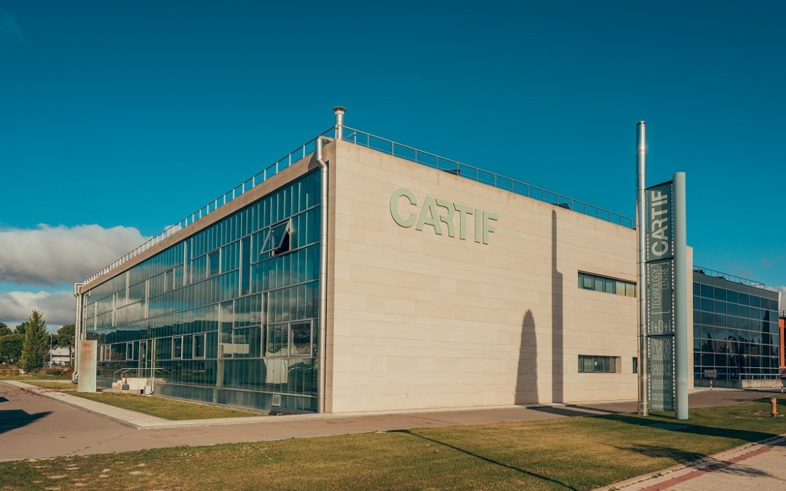

Sobre nosotros
CARTIFactory

CARTIFactory ofrece a empresas, investigadores y organismos públicos acceso a tecnologías de vanguardia como:
Robótica colaborativa
Inteligencia artificial generativa (GenAI)
Gemelos digitales
Internet industrial de las cosas (IIoT)
Sistemas de visión artificial
Interfaces de realidad extendida y mixta
La iniciativa está diseñada especialmente para ayudar a las pymes y a las organizaciones industriales a experimentar con tecnologías de transformación digital en entornos realistas.
Un aspecto clave de CARTIFactory es su alineación con la visión de la Industria 5.0, en la que la tecnología no solo se centra en la productividad, sino también en el bienestar de las personas, la sostenibilidad, la resiliencia y la colaboración segura entre personas y robots. El laboratorio apoya el desarrollo y la validación de comportamientos robóticos adaptativos, interfaces de interacción natural y sistemas industriales interoperables. La infraestructura incluye plataformas robóticas colaborativas, sistemas de visión basados en cámaras, dispositivos de realidad mixta, herramientas robóticas intercambiables y estaciones de trabajo industriales. Estas tecnologías se están validando actualmente en casos de uso prácticos como:
Montaje y desmontaje de productos de alto valor
Recogida inteligente de objetos en almacenes y operaciones logísticas
Tareas colaborativas entre personas y robots
Evaluación de la productividad y la seguridad en entornos industriales
Estas aplicaciones surgen de proyectos europeos de innovación como ARISE, centrados en la robótica colaborativa, la IA y los gemelos digitales para escenarios de fabricación y refabricación.
Otro elemento importante de CARTIFactory es su compromiso con los estándares abiertos y la interoperabilidad mediante tecnologías como FIWARE, Vulcanexus y ROS4HRI. FIWARE proporciona la base tecnológica para crear soluciones industriales modulares e interoperables con capacidades de supervisión en tiempo real, integración IT/OT, análisis predictivo y despliegue plug-and-play en distintos sectores industriales.
A través de CARTIFactory, CARTIF aspira a reforzar su posición como centro de referencia para la innovación en Europa, ayudando a las industrias a avanzar hacia sistemas de producción más inteligentes, seguros y sostenibles, al tiempo que promueve la colaboración entre proveedores de tecnología, investigadores y agentes del sector industrial.
CARTIF


CARTIF es un centro de investigación aplicada y de carácter horizontal cuya misión principal es ofrecer soluciones innovadoras a las empresas para que puedan mejorar sus procesos, sistemas y productos, aumentar su competitividad y crear nuevas oportunidades de negocio. Su forma jurídica es la de una fundación privada sin ánimo de lucro, constituida en 1994 en la Universidad de Valladolid.
CARTIF desarrolla proyectos de I+D financiados por empresas privadas o mediante fondos públicos obtenidos en convocatorias competitivas nacionales e internacionales. CARTIF también apoya a las entidades públicas (ayuntamientos, gobiernos regionales…) en la planificación y el desarrollo de proyectos de gran impacto.
CARTIF es un centro multidisciplinar que trabaja en múltiples áreas de conocimiento orientadas a numerosos sectores económicos: energía, alimentación, industria, construcción e infraestructuras, salud y medio ambiente. Sus líneas de investigación abordan los principales retos de la sociedad, como la industria 4.0, las redes inteligentes, las ciudades inteligentes, la eficiencia energética, el patrimonio cultural, la calidad de vida, la economía circular, los recursos naturales y la biotecnología.
CARTIF dispone de un laboratorio de ensayos analíticos que ofrece servicios de análisis al propio centro y a otras empresas mediante una amplia oferta que incluye digitalización 3D, caracterización de biomasa, biotecnología alimentaria y nanotecnología de materiales